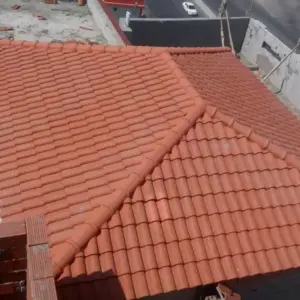
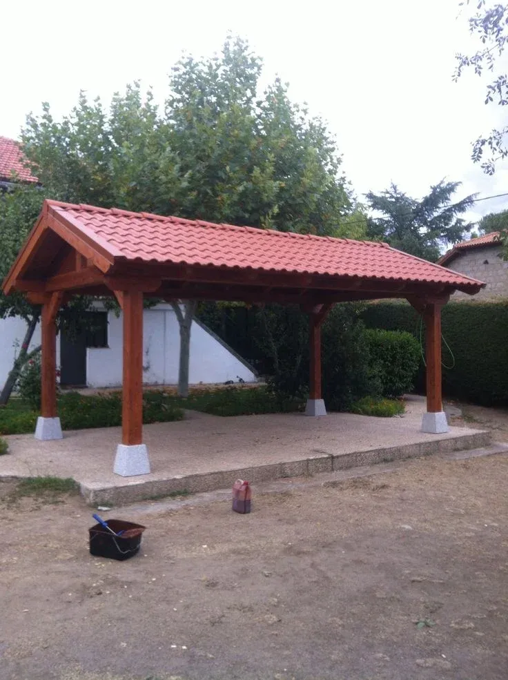

القرميد اختيار جمالي بقدر ما هو وظيفي
كثير من طلبات القرميد في جدة لا تأتي من حاجة عزل بحتة، بل من رغبة في مظهر معماري متكامل — سقف منزل يتناسق مع الحجر أو الدهان الخارجي، أو جناح مسبح يبدو امتدادًا طبيعيًا للفيلا الرئيسية. لذلك نناقش معك التصميم النهائي للمبنى ككل قبل اختيار لون ونوع القرميد، لا كبند منفصل عن الواجهة.
الأنواع التي ننفذها
القرميد الطيني التقليدي
الشكل الأكثر شيوعًا بلونه الأحمر الدافئ، يمنح عزلًا حراريًا طبيعيًا ومظهرًا كلاسيكيًا أصيلًا.
القرميد مع الواجهات الزجاجية
دمج سقف القرميد التقليدي مع واجهات وغرف زجاجية حديثة، توازن بين الطابع الكلاسيكي والإضاءة الطبيعية.
تغطية أجنحة المسابح والبرجولات
استخدام القرميد لتغطية الأجنحة والبرجولات المحيطة بالمسبح بمظهر متسق مع سقف المنزل الرئيسي.
القرميد الإسمنتي والمعدني
بديل اقتصادي أو خفيف الوزن للقرميد الطيني، بمتانة عالية ومقاومة جيدة لعوامل الطقس الساحلية.
استخدامات القرميد المتنوعة
- أسقف المنازل والفلل: الاستخدام الأكثر شيوعًا، بميلان مدروس لتصريف الأمطار.
- أجنحة المسابح والبرجولات: لتوحيد المظهر المعماري مع المبنى الرئيسي.
- تكسية الجدران: لمسة جمالية إضافية على الواجهات الخارجية.
- القباب والعناصر المعمارية الخاصة: في المشاريع التي تتطلب طابعًا كلاسيكيًا مميزًا.



عوامل تحديد السعر
| العامل | أثره على السعر |
|---|---|
| نوع القرميد (طيني، إسمنتي، معدني) | الطيني الطبيعي غالبًا أعلى تكلفة من الإسمنتي والمعدني |
| مساحة السطح وميلانه | الأسقف الأكثر تعقيدًا في الميلان تحتاج عمالة وضبطًا أدق |
| تجهيز الهيكل الحامل والعزل المائي | بند أساسي يُضاف قبل تركيب القرميد نفسه |
| القطع الطرفية والمزاريب | تشطيبات نهائية تؤثر في المظهر العام والتكلفة الإجمالية |
صيانة أسقف القرميد
القرميد متين لكنه ليس عديم الصيانة تمامًا، خاصة عند حواف السقف ومسارات الصرف:
- فحص القطع المتشققة أو المزاحة بعد كل موسم رياح وشتاء.
- تنظيف الأتربة والرمال المتراكمة بين القطع لمنع انسداد مسارات الصرف.
- فحص طبقة العزل المائي أسفل القرميد كل بضع سنوات.
- التأكد من سلامة المزاريب والقطع الطرفية عند حواف السقف.
أسئلة يتكرر سؤالها
هل يتأثر القرميد بحرارة ورطوبة جدة؟
القرميد الطيني والإسمنتي مصممان أساسًا لمقاومة تقلبات الطقس، ونختار النوع المناسب بحسب موقع السطح وتعرضه المباشر للشمس أو الرطوبة الساحلية.
هل القرميد أثقل من ألواح السقف المعدنية؟
نعم عمومًا، ولهذا نتأكد من قدرة الهيكل الحامل على استيعاب الوزن الإضافي قبل التركيب، خاصة في الملاحق والامتدادات الجديدة.
هل يحتاج القرميد صيانة دورية؟
صيانة بسيطة تتضمن فحص القطع المكسورة أو المزاحة بعد المواسم الريحية، مع تنظيف دوري لمنع تراكم الأتربة.
هل يمكن استخدام القرميد على أسقف مسطحة؟
القرميد يحتاج ميلانًا معينًا للسقف لضمان تصريف المياه بشكل صحيح، لذلك نصممه غالبًا فوق هيكل مائل مخصص حتى على المباني ذات السقف المسطح أساسًا.